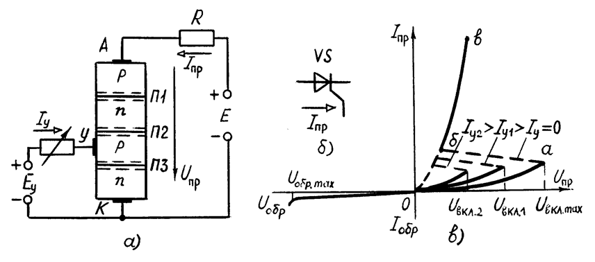
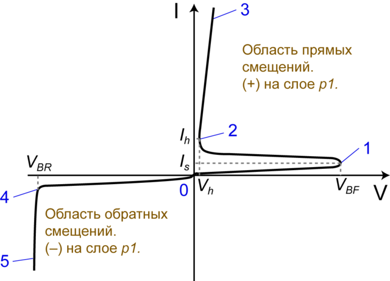
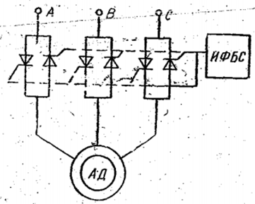
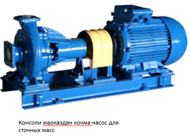
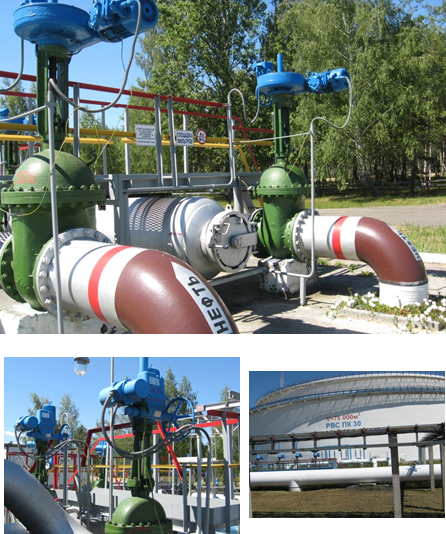

Двигателни тўғри танлаш катта аҳамиятга эгадир. Кўп сонли ўзгарувчан ва ўзгармас ток двигателларининг
турлари ичида у ёки бу иш машинасининг юритмаси учун шундай двигателни танлаш керакки, у ишлаб чиқариш
жараёнининг ҳам техник, ҳам иқтисодий талабларини тўла-тўкис қондирсин.
Электр юритмаларни лойиҳалашда ўзаро боғлиқ бир қатор масалалар (двигателнинг кучланишини, тезлигини
ва турини танлаш) ни ҳал қилишга тўғри келади.
Двигателнинг номинал кучланишини танлаш. Бу масалани ечишда стандарт номинал кучланишга
асосланилади. Уч фазли двигателлар 220, 380, 660, 3000, 6000 ва 10000 В, кучланишга, ўзгармас ток
двигателлари 110, 220 ва 440 В кучланишларга мўлжаллаб чиқарилади.
Кичик ва ўртача (100 кВтгача) қувватли уч фазали асинхрон ва синхрон двигателлар учун 380 В
кучланишни танлаш мақсадга мувофиқдир. 220 В ли кучланиш тавсия этилмайди, чунки бунда ток кучи у ^З
марта юқори бўлиб, рангли металл сарфини кўпайтиради.
Катта қувватли электр юритмалар учун 3000, 6000 ва 10000 В га мўлжалланган уч фазали двигателларни
қўллаш тавсия этилади.
Бу кучланишлардан қай бирини танлаш саноат корхонасидаги юқори кучланишли тармоқдаги кучланишнинг
қийматига боғлиқ.
Тезлиги бошқариладиган ўзгармас ток двигателли электр юритма учун асосан 220 В, баъзан 110 В кучланиш,
тавсия этилади. Чунки 440 Вга мўлжалланган ўзгармас ток двигателлари ишлаш даврида тез-тез ишдан чиқиб
туради.
Двигатель туринн танлаш. Танланадиган двигателнинг шундай турини танлаш керакки, уни бошқариш осон,
эксплуатация қилишда мустаҳкам ва ишончли ҳамда нархи арзон, ўзи ихчам, шунингдек юқори энергетик
кўрсатгичларга эга бўлсин. Двигателнинг турини танлашда юритманинг тезлиги бошқариладиган ёки
бошкарилмайдиганлигига ҳам эътибор бериш керак.
Юқоридаги талабларнинг аксариятини қондирувчи электр двигатель — бу ротори қисқа туташтирилган
асинхрон двигателдир. Шунинг учун иш жараёнида тезлигини бошқариш талаб этилмайдиган барча иш
механизмлари ва машиналарида асинхрон двигателлар кенг қўлланилади. Шунингдек, мазкур двигателлар
камчиликлардан ҳам холи эмас
Уларнинг асосийлари қуйидагилардан иборат:
Чекланган ишга тушириш моментида катта ишга тушириш токининг мавжудлиги;
Ротор занжиридаги иссқлик миқдорининг ташқи муҳитга яхши тарқалмаслиги туфайли қайта улаш сонининг
чекланганлиги;
Ўқдаги нагрузка моменти ўзгарганда тезликнинг ўзгариши.
Шунга қарамай, халқ ҳўжалигидаги , деярли барча кичик ва ўртача 100 кВтгача қувватли, тезлиги
бошқарилмайдиган иш механизмларида ротори қисқа туташтирилган асинхрон двигателлар ишлатилади.
Бази холларда фаза роторли асинхрон двигателлардан ҳам фойдаланишга тўғри келади. Улар қуйидаги
электр юритмаларни ҳаракатга келтиришда қўлланилади:
Оғир шароитда ишга тушириладиган, ишга тушириш моментининг катта бўлиши талаб этиладиган ва
тезланишни
чеклайдиган механизмлар;
Соатига қайта уланиш сони кўп бўлган қурилмалар (такрорланадиган қисқа муддатли режимда ишлайдиган);
Тезликни кичик чегарада бошқариш талаб этиладиган қурилмалар.
Фаза роторли асинхрон двигателларни қўллаш керак бўлганда уларнинг тузилишининг мураккаблигини, оғирлиги
ва хажмининг нисбатан катта эканлиги, COS нинг кичиклигини ва эксплуатацияси нисбатан мураккаблигини
эътиборга олиш керак.
Ўртача ва катта қувватли, узоқ муддатли режимда ишлайдиган бошқарилмайдиган электр юритмаларда
синхрон двигателлардан фойдаланиш мақсадга мувофиқдир.
Бундай юритмаларга компрессорлар, катта қувватли насослар ва вентиляторлар ва бошқалар киради.
Синхрон двигателлар юқори ФИК ва сиғимли cos
Кичик қувватли қурилмаларда бу двигателларни қўллаш иқтисодий жиҳатидан ўзини оқламайди, чунки сарфланган харажатларни уларни эксплуатация қилишдаги афзалликлари қопламайди.
Электр двигателларни иш машиналари билан ўзаро бириктиришнинг энг содда ва мустаҳкам тури уларни бевосита муфта орқали улашдир. Бу ҳолда двигателнинг тезлиги иш машинасининг тезлигига тенг қилиб олинади.
Двигателлар эса маълум бир стандарт тезликка мўлжалланган бўлади. Бундан ташқари, двигателларнинг номинал тезлиги кичикроқ бўлса, уларнинг ўлчами берилган номинал қувватда (Рном) каттароқ бўлади.
Шунинг учун аксарият двигателлар 1500 ва 3000 айл/мин тезликка мўлжаллаб чиқарилади.
Иккинчидан, иш машиналари, асосан, кичик тезликка (200 — 500 айл/мин) мўлжалланган булади. Бинобарин, двигателларни иш машиналарига улаш узатиш қурилмаларидан фойдаланишни тақозо килади.
Бундай ҳолларда двигателнинг номинал тезлиги бир неча вариантларда ҳисоблаш,, текшириш ва анализ қилиш асосида танланади.
Тиристор – яримутказгич курилма булиб уч ва ундан ортик р-n утишга эга булади
Тиристор ВАХ сида манфий дифференциал каршилик кисмига эга булади.


К аноду тиристора подали небольшое положительное напряжение. Эмиттерные переходы включены в прямом направлении, а коллекторный в обратном. (по сути все напряжение будем на нем). Участок от нуля до единицы на вольт-амперной характеристике будет примерно аналогичен обратной ветви характеристики диода. Этот режим можно назвать — режимом закрытого состояния тиристора. При увеличении анодного напряжения происходит происходит инжекция основных носителей в области баз, тем самым происходит накопление электронов и дырок, что равносильно разности потенциалов на коллекторном переходе. С увеличением тока через тиристор напряжение на коллекторном переходе начнет уменьшаться. И когда оно уменьшится до определенного значения, наш тиристор перейдет в состояние отрицательного дифференциального сопротивления (на рисунке участок 1-2).
После этого все три перехода сместятся в прямом направлении тем самым переведя тиристор в открытое состояние (на рисунке участок 2-3). В открытом состоянии тиристор будет находится до тех пор, пока коллекторный переход будет смещен в прямом направлении. Если же ток тиристора уменьшить, то в результате рекомбинации уменьшится количество неравновесных носителей в базовых областях и коллекторный переход окажется смещен в обратном направлении и тиристор перейдет в закрытое состояние. При обратном включении тиристора вольт-амперная характеристика будет аналогичной как и у двух последовательно включенных диодов. Обратное напряжение будет ограничиваться в этом случае напряжением пробоя.
Тиристорли ўзгартиргичларнинг юқори ФИК (0,95-0,97), габарит ўлчамларининг нисбатан кичиклиги ва шу каби бошқа кўрсаткичлари туфайли тиристорли электр юритмалардан кенг фойдаланиш йўлга қўйилмоқда.
Тиристорлар ва тегишли бошқариш системаларидан фойдаланиш ҳам ўзгарувчан, ҳам ўзгармас ток двигателларини ишга тушириш, муаммосини ҳал қилади ҳамда керакли ростлаш характеристикалари ва динамик режимларни олиш имконини беради.
Тиристорли ўзгарувчан ток электр юритмаси. Асинхрон двигателнинг айланишлар частотасини ростлаш учун тиристорлар статор занжирига уланади.
Бунда улар ёрдамида статор чулғамларидаги синусоидал кучланишнинг амплитудасини (фазали ростлаш) ёки частотасини (частотали ростлаш) ростлаш мумкин. Ҳар иккала ҳолда ҳам асинхрон двигателнинг айлантириш моменти ўзгаради. Бу айланишлар частотасининг ўзгаришйга олиб келади.

Тиристорли ўзгармас ток электр юритмаси. Узгармас ток двигателининг айланишлар частотасини ростлаш керак бўлганда ва ҳаддан ташқари катта қувватли двигателларни ишга туширишда тиристорли ўзгартиргичлар кенг ишлатилмоқда. Улар ёрдамида ўзгармас ток двигателлари уч фазали ўзгарувчан ток тармоғига уланиши мумкин.
Тиристорли ўзгаргиргич —двигател (ТЎ—Д ) системасининг содда схемаларидан бири расмда кўрсатилган. Тиристорли ўзгартиогич ИФБС билан оиргаликда уч фазали ўзгарувчан тармоқ кучланишини узгарадиган кучланишли ўзгармас токка айлантиради.


Тиристорли ўзгартиргичларнинг юқори ФИК (0,95-0,97'),
габарит ўлчамларининғ нусбатан кичиклиги ва шу каби бош-
қа кўрсаткичлари туфайли тиристорли электр юритмалардан
кенг фойдаланиш йўлга қўйилмОқда. ТирисТорлар ва тегишли
бошқариш система л аридан фойдаланиш ҳам ўзгарувчан, ҳам
ўзгармас ток двигателларини ишга тушириш, муаммосини ҳал
қилади ҳамда керакли ростлаш характеристикалари ва дина
мик режимларни олиш имконини беради.
Юқоридаги формуладан кўринадики, ростлаш бурчаги а ни
ўзгартириш якОрга келаётган кучланишни ўзгартириш . имко
нини беради. Натижада двигателнинг б у р чак тезлигини кенг
оралиқда ўзгартиради. а нинг турли қийматлари учуь ТЎ—Д
системанинг механик харакi ристикалари Г — Д система ха-
рактерисгйкаларига ўхшаш ва ўзаро параллел ҳолда бўлади